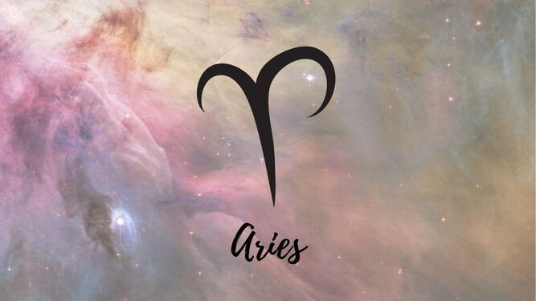
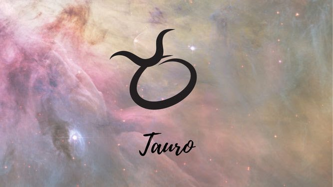
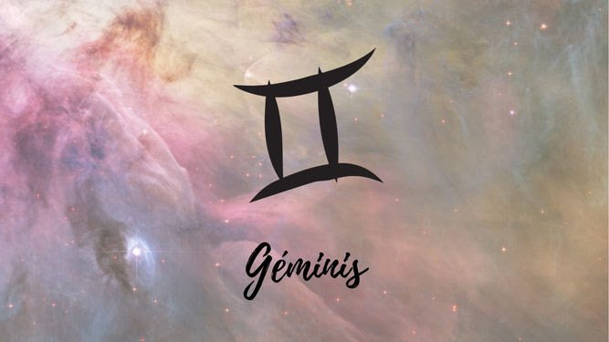
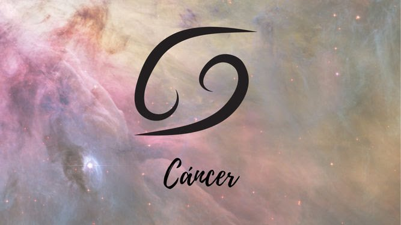
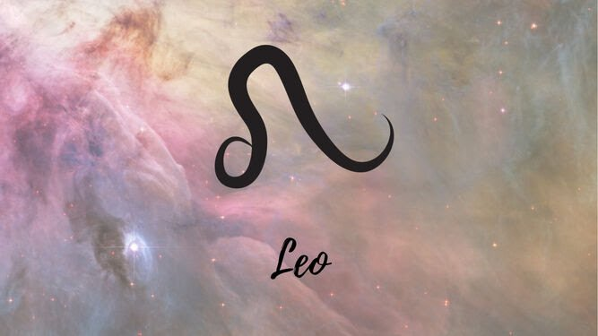
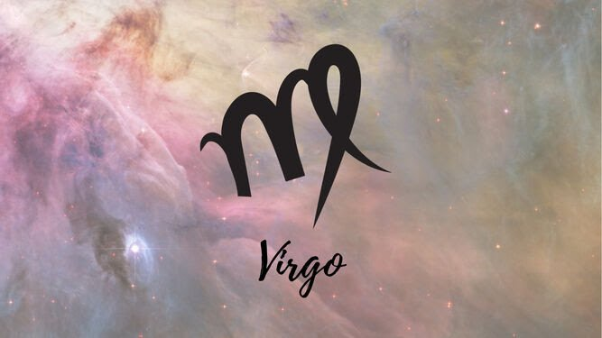
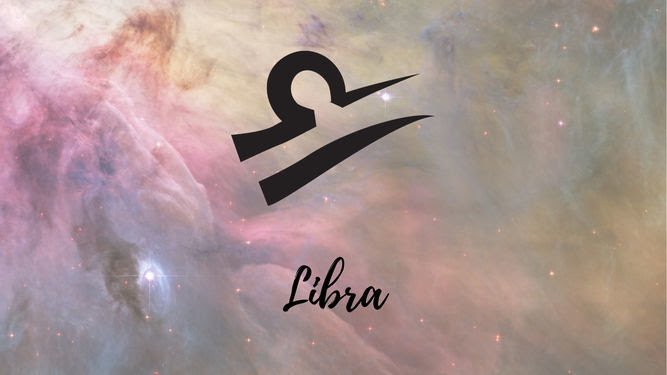
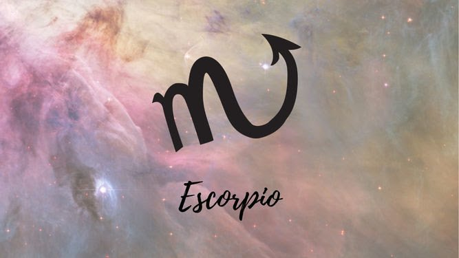
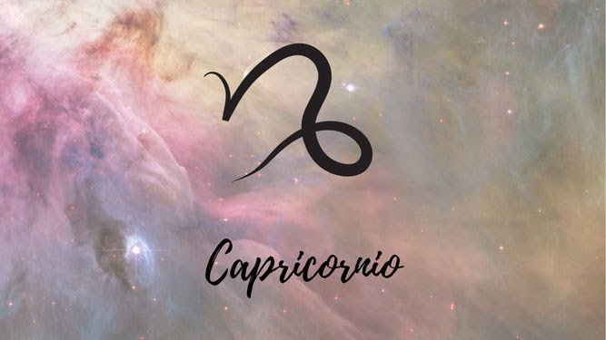
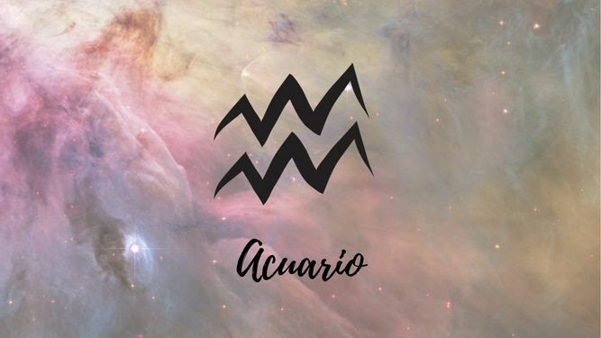

Desde la Antigüedad, la astrología ha suscitado la atención y el interés de multitud de personas. En el estudio de la influencia que la posición de los cuerpos celestes tiene sobre nuestras personalidades y nuestros destinos, los signos zodiacales tienen especial importancia y es que están marcados por un acontecimiento tan importante como es nuestro nacimiento.
Hay un total de 12 signos en el Zodíaco occidental: Aries, Tauro, Géminis, Cáncer, Leo, Virgo, Libra, Escorpio, Sagitario, Capricornio, Acuario y Piscis. Cada uno de estos signos tiene una personalidad y características que representan a 12 tipos de personalidades y que, según las relaciones que guardan con otros signos y astros, pueden marcar distintos aspectos de tu vida.
Aries
Aries (21 marzo - 19 abril)
Los Aries son, de todos los signos, los que más cómodos se sienten comenzando nuevos proyectos. Les gusta llevar la vara de mando y no tienen miedo de lanzarse hacia lo desconocido. Tienen un gran sentido de la aventura y les encantan los retos, sobretodo los que conllevan aprender cosas nuevas.
En el amor, aunque no les cuesta encontrar un alma gemela, suelen necesitar un compañero que les aporte mucha estabilidad para equilibrar su personalidad impulsiva y aventurera.

Tauro
Tauro (20 abril - 21 mayo)
Los nacidos bajo este signo no se andan con chiquitas, lo suyo no son las aventuras y los romances breves: sólo se conformarán con su alma gemela. Eso sí, si traicionan la confianza de un Tauro difícilmente la volverán a recuperar y este se volverá receloso a la hora de conocer gente nueva.
Los Tauro tienen una merecida reputación como los más cabezotas de todos los signos y suelen ser personas muy constantes y leales con las que se puede contar para casi todo. Les gusta todo aquello que consideren elegante y sofisticado y son muy perfeccionistas.

Géminis
Géminis (21 mayo - 20 junio)
Las relaciones pueden llegar a ser muy complicadas para un Géminis. Curiosamente, siendo personas que experimentan cambios constantemente no se sienten muy cómodos cuando sus compañeros evolucionan y toman perspectivas diferentes ante la vida. Los nacidos bajo este signo también tienden a buscar una relación muy estable y duradera pero a menudo sienten la tentación de vivir algo más casual.
Los Géminis son los mejores comunicadores del Zodíaco y no tienen problemas para desenvolverse en el espectro social, aunque a veces los tilden de manipuladores. Saben cómo llevar una vida organizada y bien estructurada.

Cáncer
Cáncer (21 junio - 22 julio)
Los Cáncer tienen una gran tendencia a vivir en el pasado y esto se acentúa aún más cuando están solteros aunque, por el contrario, cuando están en una relación sana, se suelen concentrar más en el futuro próximo y se esfuerzan por cumplir todas sus metas.
Los nacidos bajo este signo son amantes muy tiernos y personas muy sensibles a las que los golpes que da la vida pueden hacer mucho daño. Por este motivo, no es raro que un Cáncer esté siempre en guardia y a la defensiva, algo muy contraproducente que puede acabar alejándolo de sus seres más queridos.

Leo
Leo (23 julio - 22 agosto)
Se dice que los Leo son los más fáciles de reconocer a simple vista por tener un carácter muy marcado, y suele ser verdad. Cuando un Leo entra en la sala, todos los ojos se centran en él. Son líderes naturales y, la gran mayoría de ellos, disfrutan siendo el centro de atención. Quizás este sea el motivo por el que no aceptan críticas de cualquier tipo y se hacen los suecos cuando saben que han hecho algo mal.
En el amor, los nacidos bajo este signo necesitan un compañero atento, que sea de pocas palabras y prefiera escuchar a ser escuchado.

Virgo
Virgo (23 agosto - 22 septiembre)
Una de las principales características de los nacidos bajo este signo es su forma lógica y estructurada de hacer las cosas. Son resolutivos y organizados por naturaleza y les encanta seguir una rutina diaria. No precisan de grandes parafernalias para ser felices, encuentran alegría en las pequeñas cosas y son personas más bien sencillas.
A la hora de encontrar el amor, los Virgo tienen un enfoque práctico y pueden llegar a conformarse con alguien que no les apasiona si se sienten muy valorados por esa persona y consideran que cumple los requisitos mínimos para tener una relación estable.

Libra
Libra (23 septiembre - 22 octubre)
La característica más inherente a los Libra es que son personas a las que les cuesta muchísimo tomar decisiones sea cual sea la magnitud de estas. Necesitan que todos los aspectos de su vida estén más o menos equilibrados para ser felices. Ellos mismos son su peor enemigo, ya que les gusta poner a prueba este balance provocando situaciones límite.
También son indecisos en el amor, ámbito en el que se toman su tiempo para explorar todas las posibilidades que tienen. Es difícil que un Libra se decante por una pareja o establezca una relación seria si antes no tiene un profundo conocimiento de sí mismo.

Escorpio
Escorpio (23 octubre - 21 noviembre)
No hay nada ni nadie más intenso y curioso que un Escorpio. Son personas muy introvertidas, reflexivas y, a menudo, existencialistas. Los Escorpio necesitan estar absolutamente seguros de algo antes de hacerlo. Raramente hacen caso a alguien más que a ellos mismos y les cuesta mucho centrarse en una sola cosa, por lo que suelen tener intereses muy variados. Su imaginación y gran sentido de la competitividad los hace imparables en el ámbito creativo.
Los nacidos bajo este signo suelen tener problemas a la hora de vivir un romance. Su intensa dedicación y lealtad, algo que puede malinterpretarse como posesividad, asusta a sus parejas en las etapas tempranas de las relaciones.

Sagitario
Sagitario (22 noviembre - 21 diciembre)
Los Sagitario tienen una gran confianza en sí mismos y a menudo son el alma de la fiesta. Casi siempre caen bien por la energía positiva que desprenden y su visión optimista del futuro es contagiosa. Los nacidos bajo este signo forjan amistades nuevas con mucha facilidad y son personas muy sociables en quienes, generalmente, se puede confiar.
En el amor, a veces, esta confianza y determinación hacen que los Sagitario se desencanten rápidamente con sus parejas en cuanto ven ciertas incompatibilidades. Cuando se sienten solos durante mucho tiempo, los Sagitarios pueden rendirse a sus necesidades y conformarse con menos de lo que les gustaría para paliar la soledad.
Capricornio
Capricornio (22 diciembre - 19 enero)
Los Capricornio tienen una gran necesidad de sentirse aceptados e incluidos y mantener un buen estatus social. Son personas honestas que no soportan estar rodeados de gente falsa o mentirosa y no dudarán en decir lo que piensan a la cara de nadie.
Los nacidos bajo este signo suelen dar mucha importancia al aspecto físico de sus parejas cuando las buscan, no tanto una vez ya están enamorados, convirtiéndose en parejas muy estables y entregadas. Cuando están solteros y buscan compañía, tienden a hacer promesas que no suelen cumplir y venderse más de la cuenta.

Acuario
Acuario (20 enero - 18 febrero)
Los Acuario son los más populares del patio y tienen un don de gentes natural que les hace conquistar cualquier evento social. Saben cómo entablar conversación y dar a la gente lo que quiere, y esto les hace sentir muy poderosos pero, cuando se encuentran en situaciones íntimas con una sola persona, tienden a sentirse inseguros y tomárselo con calma.
Si un Acuario siente que su pareja necesita más de lo que él le ofrece, en la mayoría de los casos optará por acabar con esa relación antes de plantearse hacer un esfuerzo extra.

Piscis
Piscis (19 febrero - 20 marzo)
Los Piscis son idealistas y soñadores de nacimiento. Dados de lleno al mundo de la imaginación, sus deseos suelen ser totalmente imposibles y esto les puede llegar a causar una gran frustración con el mundo real. Pueden llegar a ser un tanto hedonistas y les gusta disfrutar de la vida al máximo sin pararse mucho a pensar. La gran mayoría de los Piscis son personas muy carismáticas con una gran determinación.